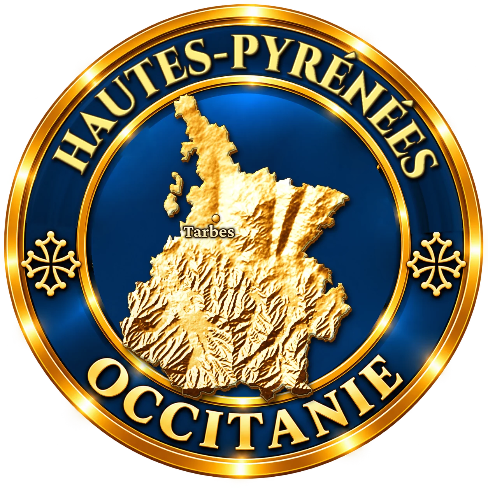

Arreau, Perle
des NestesPlus Beau Village de France au confluent de l'Aure et du Louron


⟹ Villages & Patrimoine ⟸

Blotti à environ 700 mètres d'altitude, au confluent de la Neste d'Aure et de la Neste du Louron, Arreau commande depuis le Moyen Âge l'un des grands couloirs de passage entre les deux versants des Pyrénées. Simple bourg de montagne à l'origine, il devient le siège de la justice des vallées et s'impose comme la capitale historique du Pays des Quatre-Vallées (Aure, Neste, Barousse et Magnoac), réunies sous l'autorité des seigneurs d'Aure puis des comtes d'Armagnac.

La position stratégique du bourg explique la présence de plusieurs points fortifiés : le château de Ségure à l'est, qui surveillait la vallée des Bareilles et la route de Jézeau, et le château de Camou à l'ouest, gardien de la confluence. De ce dernier subsiste l'actuel Château des Nestes, dont la tour centrale constitue la partie la plus ancienne. Tour de défense, siège de justice, caserne et hôpital au fil des siècles, il fut ensuite transformé en scierie avant d'être restauré pour accueillir aujourd'hui l'office de tourisme et le musée des Cagots.
Foires et marchés ont fait la prospérité d'Arreau : on y échangeait bétail, laine, toiles, bois et denrées venues d'Espagne par les ports pyrénéens. Cette richesse marchande a laissé de belles maisons à colombages, des façades à encorbellement et des toitures d'ardoise caractéristiques de la vallée, regroupées autour de la halle et des berges des Nestes.

En 1932, l'ensemble mairie-halle est reconstruit dans le style régional, avec sa halle à piliers au rez-de-chaussée où se tient encore le marché du jeudi matin. Aujourd'hui, Arreau, labellisé parmi les Plus Beaux Villages de France et reconnu comme cœur emblématique du Grand Site Occitanie « Pyrénées Aure-Louron », offre au visiteur un condensé d'histoire pyrénéenne, entre ponts, ruelles et sommets.
Bourg de foires et de passages, Arreau a longtemps vécu du travail du bois, de la laine et de l'eau : scieries battantes, moulins et ateliers de tissage tiraient leur énergie des deux Nestes. La vallée d'Aure était aussi réputée pour ses marbres, comme celui de Sarrancolin voisin, exportés jusqu'au château de Versailles.
Le charme d'Arreau vient de l'eau.
— J.-L. Morinière, cité par le Pays d'art et d'histoire des vallées d'Aure et du LouronLa tradition la plus gourmande reste le gâteau à la broche, cuit couche après couche devant un feu de bois en tournant lentement une broche conique. Cette spécialité pyrénéenne est célébrée chaque été lors d'une fête dédiée. Le pastoralisme, enfin, rythme toujours la vie des vallées avec les estives, la transhumance et les fromages de brebis et de vache produits dans les granges foraines.
Saint-Lary-Soulan station de ski et de thermalisme de la vallée d'Aure, porte d'entrée du massif du Néouvielle et de ses lacs, à une vingtaine de minutes.
Vallée du Louron lac de Génos-Loudenvielle, centre balnéo Balnéa et petites églises romanes peintes du Louron, à quelques kilomètres.
Col d'Aspin panorama exceptionnel sur la vallée d'Aure et les sommets pyrénéens, haut lieu du cyclisme.
Sarrancolin cité médiévale réputée pour son marbre rouge veiné et son église romane, à une dizaine de minutes en aval.